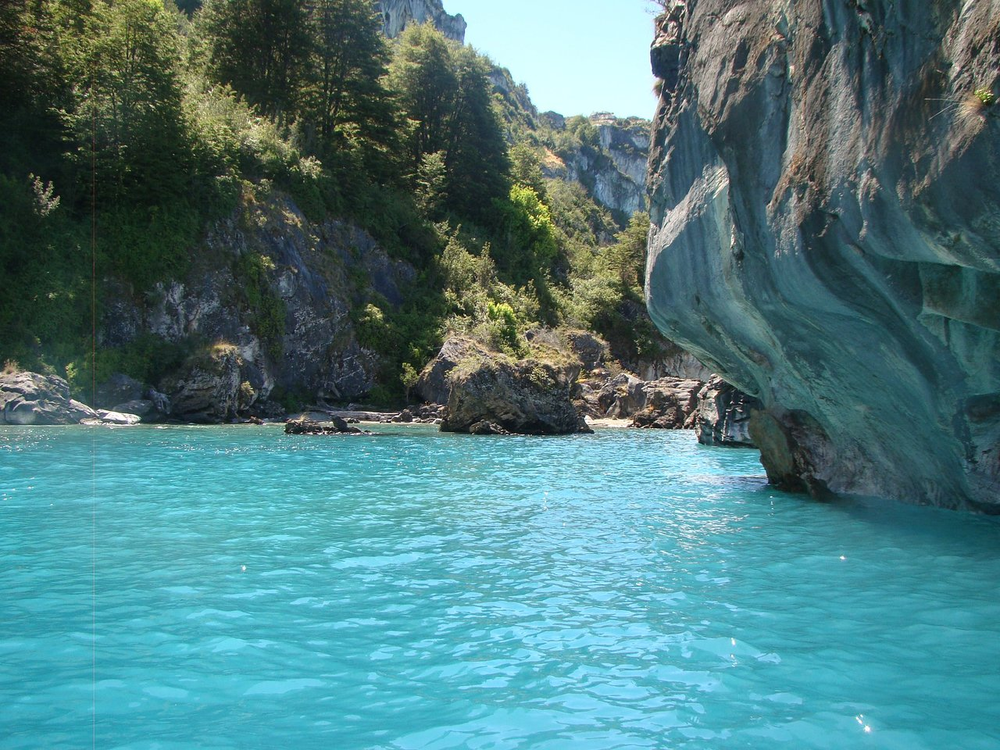

Decides tomar el camino más seguro. El río representa lo conocido - agua fresca, presas fáciles, y un camino claro que seguir. Tu cuerpo aún no está listo para grandes aventuras.
Llegas a la orilla y bebes agua por primera vez en libertad. Sabe diferente, más pura que la del santuario. El sonido del agua corriendo te tranquiliza.
Mientras descansas, notas algo extraño río abajo. Hay estructuras de madera en el agua - trampas hechas por cazadores. Ellos estan cerca.
También ves algo río arriba: señales de otros animales. Huellas de ciervos, marcas de osos en los árboles. Hay vida abundante en esa dirección, pero también más peligro.